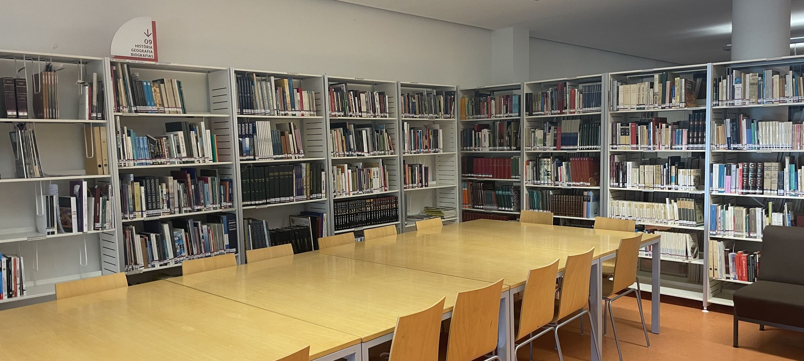

028ler
Livros para ler. Histórias para ouvir.
Tudo o que a Biblioteca escolheu para leres e ouvires, em papel, no ecrã ou nos auscultadores.
O que a Biblioteca está a destacar
São estas as escolhas da Biblioteca: cinco livros em papel, à espera na estante, e quatro descobertas noutros formatos. Poucas de cada vez, e cada uma com a razão pela qual vale a pena, que é o trabalho de uma biblioteca.
A Biblioteca ainda não marcou destaques. Aparecem aqui assim que forem escolhidos no painel.
Ler
Livros em papel, na estante. Escolhas da equipa e dos professores, por ciclo.
O que estamos a descobrir
O que a Biblioteca escolheu noutros formatos. Abrem em separador novo.